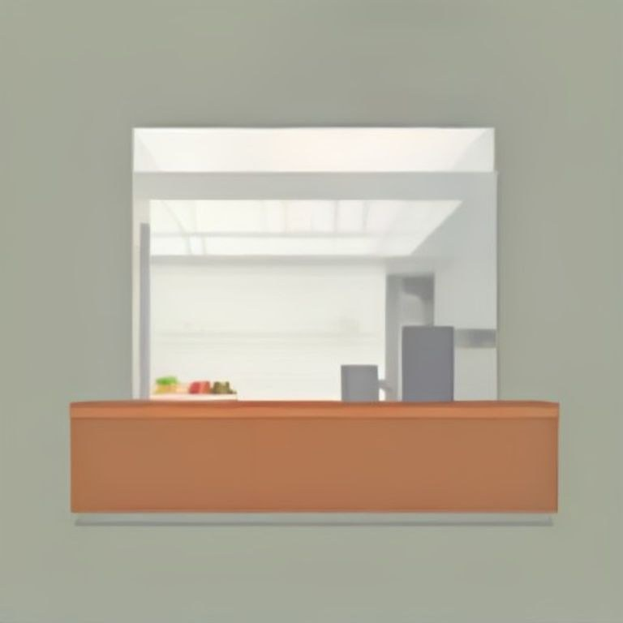
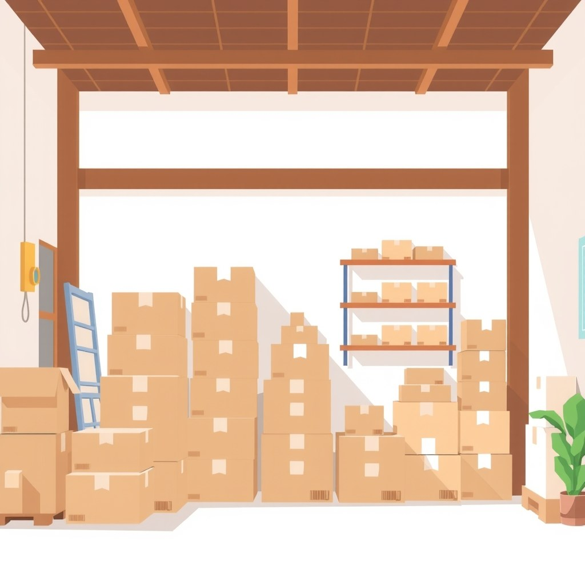

Bayangkan kamu mengelola sebuah warung kelontong. Sepanjang hari, tetangga berbondong-bondong memborong barang daganganmu hingga rak-rak jualan bersih tak tersisa. Namun, hampir semua pembeli membayar dengan cara mencatat di buku bon atau utang yang baru akan dilunasi akhir bulan depan.
Sore harinya, agen pasokan gas elpiji datang menagih pembayaran pasokan baru secara tunai. Ketika kamu membuka laci kasir, yang ada hanya lembaran kertas bon utang dan beberapa keping uang logam. Kamu punya 'laba' dari catatan penjualan barang yang laris, tetapi kamu tidak memiliki 'kas' untuk membayar tagihan hari ini. Inilah inti masalah kenapa banyak bisnis terlihat sangat menguntungkan di atas kertas, tetapi pemiliknya pusing tujuh keliling karena rekening bank usaha selalu kosong.
Apa Bedanya Laba Akuntansi dan Arus Kas Nyata?

Secara sederhana, laba akuntansi (keuntungan bersih di laporan laba rugi) dihitung berdasarkan prinsip akrual. Artinya, pendapatan langsung dicatat detik saat barang atau jasa diserahkan kepada pembeli, terlepas dari apakah uang pembayarannya sudah masuk ke rekeningmu atau belum.
Sebaliknya, arus kas nyata (cash flow) hanya memperhitungkan uang tunai yang benar-benar berpindah tangan. Kas masuk terjadi ketika pelanggan mentransfer uang ke rekening usahamu, dan kas keluar terjadi ketika kamu mengeluarkan uang dari rekening untuk membayar pengeluaran operasional.
Karen Berman dan Joe Knight dalam buku terkemuka mereka, Financial Intelligence: A Manager’s Guide to Knowing What the Numbers Really Mean (ditulis bersama John Case), menegaskan bahwa laba adalah sebuah tebakan atau estimasi akuntansi berdasarkan aturan pencatatan, sedangkan kas adalah fakta fisik yang tidak bisa dimanipulasi. Kamu tidak bisa membayar sewa gedung atau tagihan listrik menggunakan angka laba di atas kertas; kamu hanya bisa membayarnya dengan uang kas yang ada di rekening.
Jika kamu menjual barang senilai Rp50 juta dengan tempo pembayaran 60 hari, laporan laba rugimu hari ini akan langsung menunjukkan pendapatan Rp50 juta. Namun, kas nyatamu bernilai nol rupiah sampai pelanggan tersebut benar-benar melunasi tagihannya dua bulan mendatang.
Kenapa Memahami Arus Kas Sangat Krusial untuk Kelangsungan Usaha?
Banyak pemilik usaha kecil terjebak dalam ilusi bahwa selama penjualan terus tumbuh, bisnis mereka dalam keadaan aman. Padahal, pertumbuhan penjualan yang terlalu cepat tanpa pengelolaan kas yang ketat justru menjadi penyebab utama mengapa bisnis bisa bangkrut padahal produk laku keras.
Minimnya kesadaran akan laporan keuangan membuat mayoritas pelaku usaha tidak bisa membedakan mana uang milik bisnis yang bebas dipakai dan mana uang yang sebenarnya sudah mengendap menjadi piutang macet di tangan pembeli. Ketika biaya operasional seperti gaji karyawan, listrik, dan bahan baku harus dibayar tunai tiap bulan, sementara penerimaan kas tertunda berbulan-bulan, terjadilah krisis likuiditas.
Investor kawakan Warren Buffett bahkan tidak pernah menilai kesehatan keuangan suatu perusahaan hanya dari angka laba bersih akuntansi. Buffett selalu berpatokan pada apa yang ia sebut sebagai owner earnings (laba pemilik) atau arus kas bersih yang benar-benar bisa ditarik pemilik tanpa mengganggu operasional perusahaan. Jika laba bersih terlihat besar tetapi arus kas bersihnya terus negatif, perusahaan tersebut sedang berjalan menuju jurang kehancuran.
Memahami cara merapikan pencatatan keuangan awal seperti cara memisahkan uang pribadi dan usaha kecil adalah langkah dasar yang wajib diambil sebelum kamu melangkah ke pengelolaan arus kas yang lebih rumit.
Langkah Praktis Mengelola Arus Kas dan Mencegah Kas Kosong
Untuk menyelamatkan usahamu dari kebangkrutan akibat kas melompong, kamu perlu menerapkan sistem pengelolaan arus kas yang sistematis. Berikut tiga langkah nyata yang bisa kamu terapkan mulai minggu ini:
Hitung Selisih Tempo Pembayaran (Payable vs Receivable)
Bandingkan rata-rata hari yang kamu butuhkan untuk membayar pemasok (accounts payable) dengan rata-rata hari yang dibutuhkan pelanggan untuk melunasi utangnya padamu (accounts receivable). Jika kamu harus membayar pemasok dalam waktu 14 hari tetapi pelanggan baru membayar dalam 45 hari, kamu mengalami selisih kas negatif selama 31 hari. Perketat syarat kredit pelangganmu atau minta kelonggaran tempo yang lebih panjang dari pemasok.
Buat Laporan Arus Kas Terpisah Secara Mingguan
Jangan campurkan laporan laba rugi dengan catatan arus kas. Buat tabel sederhana yang mencatat tiga hal saja: saldo awal minggu, seluruh uang masuk tunai minggu ini, dan seluruh uang keluar tunai minggu ini. Laporan arus kas mingguan memberikan sinyal peringatan dini sebelum saldo rekening mendekati titik kritis.
Kendalikan Kecepatan Ekspansi Usaha
Setiap lonjakan pesanan baru membutuhkan modal kerja tambahan untuk membeli bahan baku ekstra dan membayar tenaga kerja tambahan. Jika perputaran kas dari pesanan lama masih tertahan di piutang, menolak atau menahan laju pesanan besar berikutnya bisa menyelamatkan usahamu dari kehabisan kas di tengah jalan.
Sembari mengendalikan arus kas, pastikan kamu juga sudah menetapkan margin yang cukup dengan mempelajari cara menghitung COGS dan harga jual UMKM agar setiap barang yang keluar dari gudang memang menghasilkan margin keuntungan yang layak.
Studi Kasus: Bagaimana Penjualan Melonjak Justru Bikin Usaha Nyaris Bangkrut

Mari kita cermati contoh simulasi sederhana dari sebuah usaha konveksi bernama Katering Berkah (nama dan angka berikut adalah contoh ilustrasi untuk mempermudah pemahaman):
| Bulan | Pesanan (Omzet) | Pencatatan Laba | Kas Masuk Tunai | Kas Keluar Operasional | Saldo Kas Akhir |
|---|---|---|---|---|---|
| Bulan 1 | Rp100 Juta | Rp20 Juta | Rp30 Juta | Rp50 Juta | -Rp20 Juta |
| Bulan 2 | Rp200 Juta | Rp40 Juta | Rp60 Juta | Rp110 Juta | -Rp70 Juta |
| Bulan 3 | Rp350 Juta | Rp70 Juta | Rp100 Juta | Rp190 Juta | -Rp160 Juta |
Pada Bulan 1, Katering Berkah mendapatkan kontrak katering kantor senilai Rp100 juta dengan modal bahan baku dan tenaga kerja Rp80 juta (potensi laba Rp20 juta). Namun, pihak kantor pemberi kerja menetapkan syarat pembayaran tempo 60 hari. Katering Berkah harus membayar uang muka bahan baku dan gaji koki secara tunai sebesar Rp50 juta. Kas masuk di bulan pertama hanya Rp30 juta dari DP. Hasilnya, kas berada di posisi negatif Rp20 juta.
Melihat permintaan pasar tinggi, di Bulan 2 dan 3 pemilik bisnis menambah kapasitas dan memenangi kontrak lebih besar hingga omzet menyentuh Rp350 juta. Secara akuntansi, buku catatan keuangan mencatat total akumulasi laba sebesar Rp130 juta. Namun karena mayoritas pembayaran piutang baru cair di bulan ke-4, saldo kas di rekening di bulan ke-3 minus Rp160 juta!
Di Bulan 3, Katering Berkah tidak bisa membayar gaji karyawan dan listrik dapur. Merek tersebut terancam berhenti beroperasi dan bangkrut di puncak kejayaan omzetnya hanya karena rekening kasnya kosong.
Kesalahan Umum Pengelola Usaha dalam Melihat Laba dan Kas
Ada tiga kekeliruan fatal yang sangat sering diulangi oleh pemilik usaha kecil ketika mengelola keuangan bisnis mereka:
- Mengira saldo bank adalah uang bebas pakai: Mengambil uang kas di rekening untuk keperluan pribadi (prive) begitu melihat saldo tebal, tanpa menghitung bahwa uang tersebut adalah uang muka pesanan orang atau dana cadangan untuk bayar utang bahan baku minggu depan.
- Terlalu murah hati memberikan tempo kredit: Memberikan kelonggaran pembayaran 30 hingga 60 hari kepada pembeli demi mengejar volume penjualan, tanpa mengukur kemampuan kas internal perusahaan untuk menanggung biaya operasional harian.
- Mengabaikan piutang macet: Membiarkan tagihan menumpuk berbulan-bulan tanpa adanya prosedur penagihan yang tegas. Piutang yang tidak tertagih pada akhirnya harus dihapus sebagai kerugian total, membakar laba yang selama ini tercatat di atas kertas.
Mengetahui teori beda laba dan kas tidak otomatis membuat rekening bank usahamu melimpah besok pagi. Kamu tetap butuh kedisiplinan tinggi untuk menagih piutang yang menunggak dan ketegasan untuk menolak pesanan besar jika pembeli enggan memberikan uang muka yang cukup.
Cara Mengecek Kamu Sudah Paham
Sebelum menutup artikel ini dan kembali mengurus bisnismu, coba jawab tiga pertanyaan sederhana ini untuk menguji pemahamanmu:
- Mengapa perusahaan yang mencatatkan laba bersih Rp100 juta di laporan keuangan masih bisa gagal membayar gaji karyawan minggu ini?
- Jika pembeli meminta tempo pembayaran 60 hari, apa dampak langsungnya terhadap ketersediaan uang kas operasional bisnismu bulan depan?
- Antara angka omzet penjualan dan saldo kas tunai cair di rekening, mana yang harus kamu periksa lebih dulu sebelum memutuskan untuk membuka cabang baru?
Polanya selalu sama: dalam jangka pendek, kas adalah raja yang menentukan apakah bisnismu bertahan esok hari atau gulung tikar. Langkah pertama yang bisa kamu lakukan hari ini adalah membuka catatan bisnismu, hitung berapa total piutang pelanggan yang belum cair, dan mulailah mengirimkan pesan penagihan yang ramah namun tegas hari ini juga.
Sumber
- UMKM Sulit Akses Pembiayaan Perbankan, Hanya 35,1 Person Punya Laporan Keuangan — Tribunnews · 11 Agu 2026, 10:00 WIB